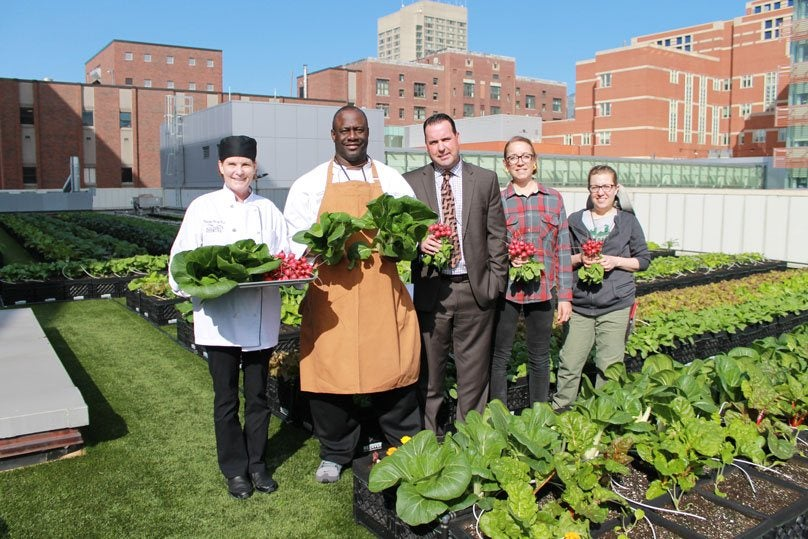

About Us
Our Team
We are a passionate group of individuals who initiated the Urban Farming community. Meet the team behind this initiative:
- Satyam Raj- Founder
- Mohammed Rizwan - Co-Founder
- Alice - Community Manager
- Bob Shawn - Agricultural Expert
Our Community
Our community consists of dedicated volunteers who invest their time and effort in promoting urban farming. We believe in the power of sustainable agriculture to transform our cities and lives.
City Communities
We have active communities in multiple cities across India:
- New Delhi
- Chandigarh
- Mumbai
- Bangalore
- Indore